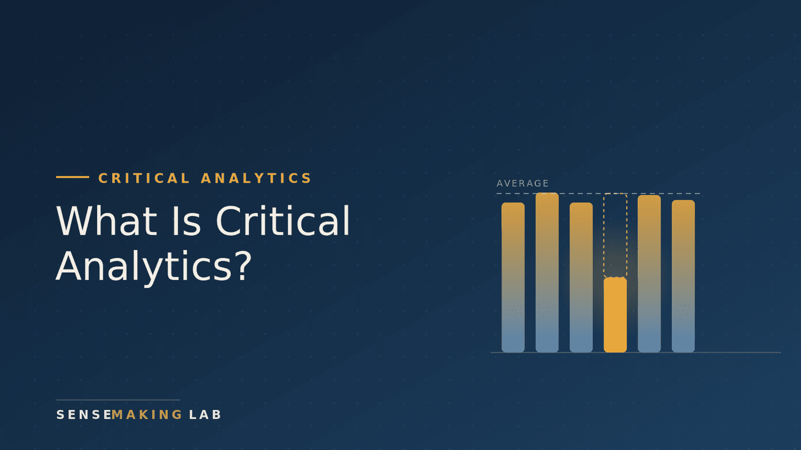

What Is Critical Analytics?
Critical analytics is data analysis that asks how a metric was built, what it measures, and who benefits, not just what the numbers say. Here is what that changes.
Read More
Critical analytics is data analysis that asks how a metric was built, what it measures, and who benefits, not just what the numbers say. Here is what that changes.
Read MoreWhat a program evaluator does, how internal and external evaluation compare, the six questions to ask before you hire, and the green and red flags that separate a strong fit from an expensive disappointment.
Read More